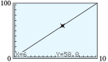

Section 3.1 Variation
¶Two types of functions are widely used in modeling and are known by special names: direct variation and inverse variation.
Subsection Direct Variation
Two variables are directly proportional (or just proportional) if the ratios of their corresponding values are always equal. Consider the functions described in the tables below. The first table shows the price of gasoline as a function of the number of gallons purchased.
| Gallons of gasoline |
Total price |
Price/ Gallons |
| \(4\) | \(\$9.60\) | \(\dfrac{9.60}{4}=2.40\) |
| \(6\) | \(\$14.40\) | \(\dfrac{14.40}{6}=2.40\) |
| \(8\) | \(\$19.20\) | \(\dfrac{19.20}{8}=2.40\) |
| \(12\) | \(\$28.80\) | \(\dfrac{28.80}{12}=2.40\) |
| \(15\) | \(\$36.00\) | \(\dfrac{36.00}{15}=2.40\) |
| Years | Population | People/Years |
| \(10\) | \(432\) | \(\dfrac{432}{10}\approx 43\) |
| \(20\) | \(932\) | \(\dfrac{932}{20}\approx 47\) |
| \(30\) | \(2013\) | \(\dfrac{2013}{30}\approx 67\) |
| \(40\) | \(4345\) | \(\dfrac{4345}{40}\approx 109\) |
| \(50\) | \(9380\) | \(\dfrac{9380}{50}\approx 188\) |
| \(60\) | \(20,251\) | \(\dfrac{20,251}{60}\approx 338\) |
The ratio \(\dfrac{\text{total price}}{\text{number of gallons}}\text{,}\) or price per gallon, is the same for each pair of values in the first table. This agrees with everyday experience: The price per gallon of gasoline is the same no matter how many gallons you buy. Thus, the total price of a gasoline purchase is directly proportional to the number of gallons purchased.
The second table shows the population of a small town as a function of the town’s age. The ratio \(\dfrac{\text{number of people}}{\text{number of years}}\) gives the average rate of growth of the population in people per year. You can see that this ratio is not constant; in fact, it increases as time goes on. Thus, the population of the town is not proportional to its age.
Notebook 3.1. QuickCheck 1.
The graphs of these two functions are shown below.

We see that the price, \(P\text{,}\) of a fill-up is a linear function of the number of gallons, \(g\text{,}\) purchased. This should not be surprising if we write an equation relating the variables \(g\) and \(P\text{.}\) Because the ratio of their values is constant, we can write
where \(k\) is a constant. In this example, the constant \(k\) is \(2.40\text{,}\) the price of gasoline per gallon. Solving for \(P\) in terms of \(g\text{,}\) we have
which we recognize as the equation of a line through the origin.
In general, we make the following definition.
Direct Variation.
\(y\) varies directly with \(x\) if
where \(k\) is a positive constant called the constant of variation.
Note 3.2.
From the preceding discussion, we see that vary directly means exactly the same thing as are directly proportional. The two phrases are interchangeable.
Example 3.3.
- The circumference, \(C\text{,}\) of a circle varies directly with its radius, \(r\text{,}\) because\begin{equation*} C = 2\pi r \end{equation*}The constant of variation is \(2\pi\text{,}\) or about 6.28.
- The amount of interest, \(I\text{,}\) earned in one year on an account paying 7% simple interest, varies directly with the principal, \(P\text{,}\) invested, because\begin{equation*} I = 0.07P \end{equation*}
Direct variation defines a linear function of the form
The positive constant \(k\) in the equation \(y = kx\) is just the slope of the graph, so it tells us how rapidly the graph increases. Compared to the standard form for a linear function, \(y = b + mx\text{,}\) the constant term, \(b\text{,}\) is zero, so the graph of a direct variation passes through the origin.
Notebook 3.4. Practice 1.

Notebook 3.5. QuickCheck 2.
Subsection The Scaling Property of Direct Variation
The fact that the constant term is zero in a direct variation is significant: If we double the value of \(x\text{,}\) then the value of \(y\) will double also. In fact, increasing \(x\) by any factor causes \(y\) to increase by the same factor. For example, in the table of gasoline prices, doubling the number of gallons of gas purchased, say, from \(4\) gallons to \(8\) gallons or from \(6\) gallons to \(12\) gallons, causes the total price to double also.
Or, consider investing $\(800\) for one year at 7% simple interest, as in Example 3.3b. The interest earned is
If we increase the investment by a factor of \(1.6\) to \(1.6 (800)\text{,}\) or $\(1280\text{,}\) the interest will be
You can check that multiplying the original interest of $\(56\) by a factor of \(1.6\) does give the same figure for the new interest, $\(89.60\text{.}\)
Example 3.6.
- Tuition at Woodrow University is $400 plus $30 per unit. Is the tuition proportional to the number of units you take?
- Imogen makes a 15% commission on her sales of environmentally friendly products marketed by her co-op. Do her earnings vary directly with her sales?
-
Let \(u\) represent the number of units you take, and let \(T(u)\) represent your tuition. Then
\begin{equation*} T(u) = 400 + 30u \end{equation*}Thus, \(T(u)\) is a linear function of \(u\text{,}\) but the \(T\)-intercept is \(400\text{,}\) not \(0\text{.}\) Your tuition is not proportional to the number of units you take, so this is not an example of direct variation. You can check that doubling the number of units does not double the tuition. For example,
\begin{equation*} T(6) = 400 + 30(6) = 580 \end{equation*}and
\begin{equation*} T(12) = 400 + 30(12) = 760 \end{equation*}Tuition for \(12\) units is not double the tuition for \(6\) units. The graph of \(T(u)\) in figure (a) does not pass through the origin.

-
Let \(S\) represent Imogen’s sales, and let \(C(S)\) represent her commission. Then
\begin{equation*} C(S) = 0.15S \end{equation*}Thus, \(C(S)\) is a linear function of \(S\) with a \(C\)-intercept of zero, so Imogen's earnings do vary directly with her sales. This is an example of direct variation. (See figure (b).)
Notebook 3.7. QuickCheck 3.
Notebook 3.8. Practice 2.
Subsection Finding a Formula for Direct Variation
If we know any one pair of values for the variables in a direct variation, we can find the constant of variation. We can then use the constant to write a formula for one of the variables as a function of the other.
Example 3.9.
If an object is dropped from a great height, its speed, \(v\text{,}\) varies directly with the time, \(t\text{,}\) the object has been falling. A rock dropped off the rim of the Grand Canyon is falling at a speed of \(39.2\) meters per second when it passes a lizard on a ledge \(4\) seconds later.
- Express \(v\) as a function of \(t\text{.}\)
- What is the speed of the rock after it has fallen for 6 seconds?
- Sketch a graph of \(v(t)\) versus \(t\text{.}\)
-
Because \(v\) varies directly with \(t\text{,}\) there is a positive constant \(k\) for which \(v = kt\text{.}\) We substitute \(v = 39.2\) when \(t = 4\) and solve for \(k\) to find
\begin{equation*} \begin{aligned}[t] 39.2 \amp = k(4)\amp\amp \blert{\text{Divide both sides by 4.}}\\ k \amp = 9.8 \end{aligned} \end{equation*}Thus, \(v (t) = 9.8 t\text{.}\)
-
We evaluate the function found in part (a) for \(t = 6\text{.}\)
\begin{equation*} v(\alert{6}) = 9.8(\alert{6}) = 58.8 \end{equation*}At \(t = 6\) seconds, the rock is falling at a speed of \(58.8\) meters per second.
-
You can use your calculator to graph the function \(v(t) = 9.8t\text{.}\) The graph is shown below.

Notebook 3.10. QuickCheck 4.
Notebook 3.11. Practice 3.
Subsection Direct Variation with a Power of \(x\)
We can generalize the notion of direct variation to include situations in which \(y\) is proportional to a power of \(x\text{,}\) instead of \(x\) itself.
Direct Variation with a Power.
\(y\) varies directly with a power of \(x\) if
where \(k\) and \(n\) are positive constants.
Example 3.12.
The surface area of a sphere varies directly with the square of its radius. A balloon of radius \(5\) centimeters has surface area \(100\pi\) square centimeters, or about \(314\) square centimeters. Find a formula for the surface area of a sphere as a function of its radius.
If \(S\) stands for the surface area of a sphere of radius \(r\text{,}\) then
To find the constant of variation, \(k\text{,}\) we substitute the values of \(S\) and \(r\text{.}\)
Thus, \(S = f (r ) = 4\pi r^2\text{.}\)
Notebook 3.13. Practice 4.
In any example of direct variation, as the input variable increases through positive values, the output variable increases also. Thus, a direct variation is an increasing function, as we can see when we consider the graphs of some typical direct variations shown below.
Caution 3.14.
The graph of a direct variation always passes through the origin, so when the input is zero, the output is also zero. Thus, the functions \(y = 3x + 2\) and \(y = 0.4x^2 - 2.3\text{,}\) for example, are not direct variation, even though they are increasing functions for positive \(x\text{.}\)
Even without an equation, we can check whether a table of data describes direct variation or merely an increasing function. If \(y\) varies directly with \(x^n\) , then \(y = kx^n\) , or, equivalently,\(\dfrac{y}{x^n} = k\text{.}\)
Test for Direct Variation.
If the ratio \(\dfrac{y}{x^n}\) is constant, then \(y\) varies directly with \(x^n\text{.}\)
Example 3.15.
Delbert collects the following data and would like to know if \(y\) varies directly with the square of \(x\text{.}\) What should he calculate?
| \(x\) | \(2\) | \(5\) | \(8\) | \(10\) | \(12\) |
| \(y\) | \(6\) | \(16.5\) | \(36\) | \(54\) | \(76\) |
If \(y\) varies directly with \(x^2\text{,}\) then \(y = kx^2\text{,}\) or \(\dfrac{y}{x^2}= k\text{.}\) Delbert should calculate the ratio \(\dfrac{y}{x^2}\) for each data point.
| \(x\) | \(2\) | \(5\) | \(8\) | \(10\) | \(12\) |
| \(y\) | \(6\) | \(16.5\) | \(36\) | \(54\) | \(76\) |
| \(\dfrac{y}{x^2}\) | \(1.5\) | \(0.66\) | \(0.56\) | \(0.54\) | \(0.53\) |
Because the ratio \(\dfrac{y}{x^2}\) is not constant, \(y\) does not vary directly with \(x^2\text{.}\)
Notebook 3.16. QuickCheck 5.
Notebook 3.17. Practice 5.
Subsection Scaling
Recall that if \(y\) varies directly with \(x\text{,}\) then doubling \(x\) causes \(y\) to double also. But:
- Is the area of a \(16\)-inch circular pizza double the area of an \(8\)-inch pizza?
- If you double the dimensions of a model of a skyscraper, will its weight double also?
You probably know that the answer to both of these questions is No. The area of a circle is proportional to the square of its radius, and the volume (and hence the weight) of an object is proportional to the cube of its linear dimension. Variation with a power of \(x\) produces a different scaling effect.
Example 3.18.
The Taipei 101 building is 1671 feet tall, and in 2006 it was the tallest skyscraper in the world. Show that doubling the dimensions of a model of the Taipei 101 building produces a model that weighs \(8\) times as much.
The Taipei 101 skyscraper is approximately box shaped, so its volume is given by the product of its linear dimensions, \(V = lwh\text{.}\) The weight of an object is proportional to its volume, so the weight, \(W\text{,}\) of the model is
where the constant \(k\) depends on the material of the model. If we double the length, width, and height of the model, then
The weight of the new model is \(2^3 = 8\) times the weight of the original model.
Notebook 3.19. Practice 6.
In general, if \(y\) varies directly with a power of \(x\text{,}\) that is, if \(y = kx^n\text{,}\) then doubling the value of \(x\) causes \(y\) to increase by a factor of \(2^n\text{.}\) In fact, if we multiply \(x\) by any positive number \(c\text{,}\) then
so the value of \(y\) is multiplied by \(c^n\text{.}\)
We will call \(n\) the scaling exponent, and you will often see variation described in terms of scaling. For example, we might say that "the area of a circle scales as the square of its radius." (In many applications, the power \(n\) is called the scale factor, even though it is not a factor but an exponent.)
Subsection Inverse Variation
How long does it take to travel a distance of \(600\) miles? The answer depends on your average speed. If you are on a bicycle trip, your average speed might be \(15\) miles per hour. In that case, your traveling time will be
(Of course, you will have to add time for rest stops; the \(40\) hours are just your travel time.)
If you are driving your car, you might average \(50\) miles per hour. Your travel time is then
If you take a commercial air flight, the plane’s speed might be \(400\) miles per hour, and the flight time would be
You can see that for higher average speeds, the travel time is shorter. In other words, the time needed for a \(600\)-mile journey is a decreasing function of average speed. In fact, a formula for the function is
This function is an example of inverse variation. A table of values and a graph of the function are shown below.
| \(R\) | \(T\) |
| \(10\) | \(60\) |
| \(15\) | \(40\) |
| \(20\) | \(30\) |
| \(50\) | \(12\) |
| \(200\) | \(3\) |
| \(400\) | \(1.5\) |

Inverse Variation.
\(y\) varies inversely with \(x\) if
where \(k\) is a positive constant.
Caution 3.20.
Inverse variation describes a decreasing function, but not every decreasing function represents inverse variation. People sometimes mistakenly use the phrase varies inversely to describe any decreasing function, but if \(y\) varies inversely with \(x\text{,}\) the variables must satisfy an equation of the form \(y = \dfrac{k}{x}\text{,}\) or \(xy = k\text{.}\)
To decide whether two variables truly vary inversely, we can check whether their product is constant. For instance, in the preceding travel-time example, we see from the table that \(RT = 600\text{.}\)
| \(R\) | \(10\) | \(15\) | \(20\) | \(50\) | \(200\) | \(400\) |
| \(T\) | \(60\) | \(40\) | \(30\) | \(12\) | \(3\) | \(1.5\) |
| \(RT\) | \(600\) | \(600\) | \(600\) | \(600\) | \(600\) | \(600\) |
Notebook 3.21. QuickCheck 6.
We can also define inverse variation with a power of the variable.
Inverse Variation with a power.
\(y\) varies inversely with \(x^n\) if
where \(k\) and \(n\) are positive constants.
We may also say that \(y\) is inversely proportional to \(x^n\text{.}\)
Example 3.22.
The weight, \(w\text{,}\) of an object varies inversely with the square of its distance, \(d\text{,}\) from the center of the Earth. Thus,
If you double your distance from the center of the Earth, what happens to your weight? What if you triple the distance?
Suppose you weigh \(W\) pounds at distance \(D\) from the center of the Earth. Then \(W = \dfrac{k}{D^2}\text{.}\) At distance \(2D\text{,}\) your weight will be
Your new weight will be \(\dfrac{1}{4}\) of your old weight. By a similar calculation, you can check that by tripling the distance, your weight will be reduced to \(\dfrac{1}{9}\) of its original value.
Notebook 3.23. Practice 7.
In Example 3.22 and Notebook 3.23, as the independent variable increases through positive values, the dependent variable decreases. An inverse variation is an example of a decreasing function. The graphs of some typical inverse variations are shown below.

Subsection Finding a Formula for Inverse Variation
If we know that two variables vary inversely and we can find one pair of corresponding values for the variables, we can determine \(k\text{,}\) the constant of variation.
Example 3.24.
The intensity of electromagnetic radiation, such as light or radio waves, varies inversely with the square of the distance from its source. Radio station KPCC broadcasts a signal that is measured at \(0.016\) watt per square meter by a receiver \(1\) kilometer away.
- Write a formula that gives signal strength as a function of distance.
- If you live \(5\) kilometers from the station, what is the strength of the signal you will receive?
- Let \(I\) stand for the intensity of the signal in watts per square meter, and \(d\) for the distance from the station in kilometers. Then \(I = \dfrac{k}{d^2}\text{.}\) To find the constant \(k\text{,}\) we substitute \(0.016\) for \(I\) and \(1\) for \(d\text{.}\) Solving for \(k\) gives us\begin{equation*} \begin{aligned}[t] 0.016 \amp = \dfrac{k}{1^2} \\ k \amp = 0.016 (1^2) = 0.016 \end{aligned} \end{equation*}Thus, \(I = \dfrac{0.016}{d^2}\text{.}\)
- Now we can substitute \(5\) for \(d\) and solve for \(I\text{.}\)\begin{equation*} I = \frac{0.016}{5^2}= 0.00064 \end{equation*}At a distance of \(5\) kilometers from the station, the signal strength is \(0.00064\) watt per square meter.
Notebook 3.25. Practice 8.

Notebook 3.26. Pause and Reflect.
Subsection Section Summary
¶Subsubsection Vocabulary
Look up the definitions of new terms in the Glossary.
Direct variation
Directly proportional
Constant of variation
Scaling exponent
Inverse variation
Inversely proportional
Subsubsection CONCEPTS
Direct and Inverse Variation.
\(y\) varies directly with \(x\) if the ratio \(\dfrac{y}{x} \) is constant, that is, if \(y = kx\) .
\(y\) varies directly with a power of \(x\) if the ratio \(\dfrac{y}{x^n} \) is constant, that is, if \(y = kx^n\) .
\(y\) varies inversely with \(x\) if the product \(xy \) is constant, that is, if \(y =\dfrac{k}{x}\) .
\(y\) varies inversely with a power of \(x\) if the product \(x^ny \) is constant, that is, if \(y =\dfrac{k}{x^n}\) .
The graph of a direct variation passes through the origin. The graph of an inverse variation has a vertical asymptote at the origin.
If \(y = kx^n\) , we say that \(y\) scales as \(x^n\text{.}\)
Subsubsection STUDY QUESTIONS
Describe the graph of \(y = f (x)\) if \(y\) varies directly with \(x\text{.}\)
What is true about the ratio of two variables if they are directly proportional?
If \(y\) is inversely proportional to \(x\text{,}\) then the graph of \(y\) versus \(x\) is a transformation of which basic graph?
If \(y\) varies directly with a power of \(x\text{,}\) write a formula for \(y\) as a function of \(x\text{.}\)
If \(y\) varies inversely with a power of \(x\text{,}\) write a formula for \(y\) as a function of \(x\text{.}\)
If \(y = kx^4\text{,}\) what happens to \(y\) if you double \(x\text{?}\)
State a test to determine whether \(y\) varies inversely with \(x^n\text{.}\)
If \(y = \dfrac{k}{x^2}\text{,}\) and we double the value of \(x\text{,}\) what happens to the value of \(y\text{?}\)
Subsubsection SKILLS
Practice each skill in the Homework problems listed.
Find the constant of variation: #1–4, 13–26
Write a formula for direct or inverse variation: #1–4, 13–26, 35–46
Recognize direct and inverse variation from a table of values: #27–34, 39–42
Recognize direct or inverse variation from a graph: #9–12, 35–38
Use scaling in direct and inverse variation: #13–20, 43–46
Exercises Homework 3.1
¶1.
Delbert's credit card statement lists three purchases he made while on a business trip in the Midwest. His company's accountant would like to know the sales tax rate on the purchases.
| \(\text{Price of item} \) | \(18\) | \(28\) | \(12\) |
| \(\text{Tax} \) | \(1.17\) | \(1.82\) | \(0.78\) |
| \(\text{Tax}/\text{Price} \) | \(\hphantom{00000}\) | \(\hphantom{00000}\) | \(\hphantom{00000}\) |
Compute the ratio of the tax to the price of each item. Is the tax proportional to the price? What is the tax rate?
Express the tax, \(T\text{,}\) as a function of the price, \(p\text{,}\) of the item.
Sketch a graph of the function by hand, and label the scales on the axes.
2.
At constant acceleration from rest, the distance traveled by a race car is proportional to the square of the time elapsed. The highest recorded road-tested acceleration is \(0\) to \(60\) miles per hour in \(3.07\) seconds, which produces the following data.
| \(\text{Time (seconds)} \) | \(2\) | \(2.5\) | \(3\) |
| \(\text{Distance (feet)} \) | \(57.32\) | \(89.563\) | \(128.97\) |
| \(\text{Distance/Time}^2\) | \(\hphantom{00000}\) | \(\hphantom{00000}\) | \(\hphantom{00000}\) |
Compute the ratios of the distance traveled to the square of the time elapsed. What was the acceleration, in feet per second squared?
Express the distance traveled, \(d\text{,}\) as a function of time in seconds, \(t\text{.}\)
Sketch a graph of the function by hand, and label the scales on the axes.
3.
The marketing department for a paper company is testing wrapping paper rolls in various dimensions to see which shape consumers prefer. All the rolls contain the same amount of wrapping paper.
| \(\text{Width (feet)} \) | \(2\) | \(2.5\) | \(3\) |
| \(\text{Length (feet)} \) | \(12\) | \(9.6\) | \(8\) |
| \(\text{Length}\times \text{Width} \) | \(\hphantom{00000}\) | \(\hphantom{00000}\) | \(\hphantom{00000}\) |
Compute the product of the length and width for each roll of wrapping paper. What is the constant of inverse proportionality?
Express the length, \(L\text{,}\) of the paper as a function of the width, \(w\text{,}\) of the roll.
Sketch a graph of the function by hand, and label the scales on the axes.
4.
The force of gravity on a \(1\)-kilogram mass is inversely proportional to the square of the object's distance from the center of the Earth. The table shows the force on the object, in newtons, at distances that are multiples of the Earth's radius.
| \(\text{Distance (Earth radii)} \) | \(1\) | \(2\) | \(4\) |
| \(\text{Force (newtons)} \) | \(9.8\) | \(2.45\) | \(0.6125\) |
| \(\text{Force}\times\text{distance}^2\) | \(\hphantom{00000}\) | \(\hphantom{00000}\) | \(\hphantom{00000}\) |
Compute the products of the force and the square of the distance. What is the constant of inverse proportionality
Express the gravitational force, \(F\text{,}\) on a \(1\)-kilogram mass as a function of its distance, \(r\text{,}\) from the Earth's center, measured in Earth radii
Sketch a graph of the function by hand, and label the scales on the axes.
5.
How can you tell from a table of values whether \(y\) varies directly with \(x\text{?}\)
How can you tell from a table of values whether \(y\) varies inversely with \(x\text{?}\)
6.
How can you tell from a table of values whether \(y\) varies directly with a power of \(x\text{?}\)
How can you tell from a table of values whether \(y\) varies inversely with a power of \(x\text{?}\)
7.
The length of a rectangle is \(10\) inches, and its width is \(8\) inches. Suppose we increase the length of the rectangle while holding the width constant.
-
Fill in the table.
Length Width Perimeter Area \(10\) \(8\) \(12\) \(8\) \(15\) \(8\) \(20\) \(8\) Does the perimeter vary directly with the length?
Write a formula for the perimeter of the rectangle in terms of its length.
Does the area vary directly with the length?
Write a formula for the area of the rectangle in terms of its length.
8.
The base of an isosceles triangle is \(12\) centimeters, and the equal sides have length \(15\) centimeters. Suppose we increase the base of the triangle while holding the sides constant.
-
Fill in the table.
Base Sides Height Perimeter Area \(12\) \(15\) \(15\) \(15\) \(18\) \(15\) \(20\) \(15\) Does the perimeter vary directly with the base?
Write a formula for the perimeter of the triangle in terms of its base.
Write a formula for the area of the triangle in terms of its base.
Does the area vary directly with the base?
9.
Which of the graphs could describe direct variation? Explain your answer.

10.
Which of the graphs could describe direct variation? Explain your answer.
11.
Which of the graphs could describe inverse variation? Explain your answer.
12.
Which of the graphs could describe inverse variation? Explain your answer.

13.
The weight of an object on the Moon varies directly with its weight on Earth. A person who weighs \(150\) pounds on Earth would weigh only \(24.75\) pounds on the Moon.
-
Find a function that gives the weight \(m\) of an object on the Moon in terms of its weight \(w\) on Earth. Complete the table and graph your function in a suitable window.
\(w\) \(50\) \(100\) \(200\) \(400\) \(m\) \(\hphantom{0000}\) \(\hphantom{0000}\) \(\hphantom{0000}\) \(\hphantom{0000}\) How much would a person weigh on the Moon if she weighs \(120\) pounds on Earth?
A piece of rock weighs \(50\) pounds on the Moon. How much will it weigh back on Earth?
If you double the weight of an object on Earth, what will happen to its weight on the Moon?
14.
Hubble's law says that distant galaxies are receding from us at a rate that varies directly with their distance. (The speeds of the galaxies are measured using a phenomenon called redshifting.) A galaxy in the constellation Ursa Major is \(980\) million light-years away and is receding at a speed of \(15,000\) kilometers per second.
-
Find a function that gives the speed, \(v\text{,}\) of a galaxy in terms of its distance, \(d\text{,}\) from Earth. Complete the table and graph your function in a suitable window. (Distances are given in millions of light-years.)
\(d\) \(500\) \(1000\) \(2000\) \(4000\) \(m\) \(\hphantom{0000}\) \(\hphantom{0000}\) \(\hphantom{0000}\) \(\hphantom{0000}\) How far away is a galaxy in the constellation Hydra that is receding at \(61,000\) kilometers per second?
A galaxy in Leo is \(1240\) million light-years away. How fast is it receding from us?
If one constellation is twice as distant as another, how do their speeds compare?
15.
The length, \(L\text{,}\) of a pendulum varies directly with the square of its period, \(T\text{,}\) the time required for the pendulum to make one complete swing back and forth. The pendulum on a grandfather clock is \(3.25\) feet long and has a period of \(2\) seconds.
-
Express \(L\) as a function of \(T\text{.}\) Complete the table and graph your function in a suitable window.
\(T\) \(1\) \(5\) \(10\) \(20\) \(L\) \(\hphantom{0000} \) \(\hphantom{0000} \) \(\hphantom{0000} \) \(\hphantom{0000} \) How long is the Foucault pendulum in the Pantheon in Paris, which has a period of \(17\) seconds?
A hypnotist uses a gold pendant as a pendulum to mesmerize his clients. If the chain on the pendant is \(9\) inches long, what is the period of its swing?
In order to double the period of a pendulum, how must you vary its length?
16.
The load, \(L\text{,}\) that a beam can support varies directly with the square of its vertical thickness, \(h\text{.}\) A beam that is \(4\) inches thick can support a load of \(2000\) pounds.
-
Express \(L\) as a function of \(h\text{.}\) Complete the table and graph your function in a suitable window.
\(h\) \(1\) \(2\) \(4\) \(8\) \(L\) \(\hphantom{0000} \) \(\hphantom{0000} \) \(\hphantom{0000} \) \(\hphantom{0000} \) What size load can be supported by a beam that is \(6\) inches thick?
How thick a beam is needed to support a load of \(100\) pounds?
If you double the thickness of a beam, how will the load it can support change?
17.
Computer monitors produce a magnetic field. The effect of the field, \(B\text{,}\) on the user varies inversely with his or her distance, \(d\text{,}\) from the screen. The field from a certain color monitor was measured at \(22\) milligauss \(4\) inches from the screen.
-
Express the field strength as a function of distance from the screen. Complete the table and graph your function in a suitable window.
\(d\) \(1\) \(2\) \(12\) \(24\) \(B\) \(\hphantom{0000} \) \(\hphantom{0000} \) \(\hphantom{0000} \) \(\hphantom{0000} \) What is the field strength \(10\) inches from the screen?
An elevated risk of cancer can result from exposure to field strengths of \(4.3\) milligauss. How far from the screen should the computer user sit to keep the field level below \(4.3\) milligauss?
If you double your distance from the screen, how does the field strength change?
18.
The amount of current, \(I\text{,}\) that flows through a circuit varies inversely with the resistance, \(R\text{,}\) on the circuit. An iron with a resistance of \(12\) ohms draws \(10\) amps of current.
-
Express the current as a function of the resistance. Complete the table and graph your function in a suitable window.
\(R\) \(1\) \(2\) \(10\) \(20\) \(I\) \(\hphantom{0000} \) \(\hphantom{0000} \) \(\hphantom{0000} \) \(\hphantom{0000} \) How much current is drawn by a light bulb with a resistance of \(533.3\) ohms?
What is the resistance of a toaster that draws \(12.5\) amps of current?
If the resistance of one appliance is double the resistance of a second appliance, how does the current they draw compare?
19.
The amount of power, \(P\text{,}\) generated by a windmill varies directly with the cube of the wind speed, \(w\text{.}\) A windmill on Oahu, Hawaii, produces \(7300\) kilowatts of power when the wind speed is \(32\) miles per hour.
-
Express the power as a function of wind speed. Complete the table and graph your function in a suitable window.
\(w\) \(10\) \(20\) \(40\) \(80\) \(P\) \(\hphantom{0000} \) \(\hphantom{0000} \) \(\hphantom{0000} \) \(\hphantom{0000} \) How much power would the windmill produce in a light breeze of \(15\) miles per hour?
What wind speed is needed to produce \(10,000\) kilowatts of power?
If the wind speed doubles, what happens to the amount of power generated?
20.
A crystal form of pyrite (a compound of iron and sulfur) has the shape of a regular solid with \(12\) faces. Each face is a regular pentagon. This compound is called pyritohedron, and its mass, \(M\text{,}\) varies directly with the cube of the length, \(L\text{,}\) of one edge. If each edge is \(1.1\) centimeters, then the mass is \(51\) grams.
-
Express the mass of pyritohedron as a function of the length of one edge. Complete the table and graph your function in a suitable window.
\(L\) \(0.5\) \(1\) \(2\) \(4\) \(M\) \(\hphantom{0000} \) \(\hphantom{0000} \) \(\hphantom{0000} \) \(\hphantom{0000} \) What is the weight of a chunk of pyritohedron if each edge is \(2.2\) centimeters?
How long would each edge be for a \(1643\)-gram piece of pyritohedron?
If one chunk has double the length of a second chunk, how do their weights compare?
For Problems 21–26,
Use the values in the table to find the constant of variation, \(k\text{,}\) and write \(y\) as a function of \(x\text{.}\)
Fill in the rest of the table with the correct values.
What happens to \(y\) when you double the value of \(x\text{?}\)
21.
\(y\) varies directly with \(x\text{.}\)
| \(x\) | \(y\) |
| \(2\) | \(\hphantom{000}\) |
| \(5\) | \(1.5\) |
| \(\hphantom{000}\) | \(2.4\) |
| \(12\) | \(\hphantom{000} \) |
| \(\hphantom{000} \) | \(4.5\) |
22.
\(y\) varies directly with \(x\text{.}\)
| \(x\) | \(y\) |
| \(0.8\) | \(\hphantom{000}\) |
| \(1.5\) | \(54\) |
| \(\hphantom{000}\) | \(108\) |
| \(\hphantom{000} \) | \(126 \) |
| \(6 \) | \(\hphantom{000} \) |
23.
\(y\) varies directly with the square of \(x\text{.}\)
| \(x\) | \(y\) |
| \(3\) | \(\hphantom{000}\) |
| \(6\) | \(24\) |
| \(\hphantom{000}\) | \(54\) |
| \(12\) | \(\hphantom{000} \) |
| \(\hphantom{000} \) | \(150\) |
24.
\(y\) varies directly with the cube of \(x\text{.}\)
| \(x\) | \(y\) |
| \(2\) | \(120\) |
| \(3\) | \(\hphantom{000}\) |
| \(\hphantom{000}\) | \(1875\) |
| \(6 \) | \(\hphantom{000} \) |
| \(\hphantom{000} \) | \(15,000 \) |
25.
\(y\) varies inversely with \(x\text{.}\)
| \(x\) | \(y\) |
| \(4\) | \(\hphantom{000}\) |
| \(\hphantom{000} \) | \(15\) |
| \(20\) | \(6\) |
| \(30\) | \(\hphantom{000} \) |
| \(\hphantom{000} \) | \(3\) |
26.
\(y\) varies inversely with the square of \(x\text{.}\)
| \(x\) | \(y\) |
| \(0.2\) | \(\hphantom{000}\) |
| \(\hphantom{000}\) | \(80\) |
| \(2\) | \(\hphantom{000}\) |
| \(4 \) | \(1.25 \) |
| \(\hphantom{000} \) | \(0.8 \) |
For Problems 27-30, decide whether
- \(y\) varies directly with \(x\text{,}\)
- \(y\) varies directly with \(x^2\text{,}\) or
- \(y\) does not vary directly with a power of \(x\text{.}\)
Explain why your choice is correct. If your choice is (a) or (b), find the constant of variation.
27.
| \(x\) | \(y\) |
| \(2\) | \(2.0\) |
| \(3 \) | \(4.5\) |
| \(5\) | \(12.5\) |
| \(8\) | \(32.0\) |
28.
| \(x\) | \(y\) |
| \(2\) | \(12\) |
| \(4 \) | \(28\) |
| \(6\) | \(44\) |
| \(9\) | \(68\) |
29.
| \(x\) | \(y\) |
| \(1.5\) | \(3.0\) |
| \(2.4 \) | \(5.3\) |
| \(5.5\) | \(33\) |
| \(8.2\) | \(73.8\) |
30.
| \(x\) | \(y\) |
| \(1.2\) | \(7.20\) |
| \(2.5 \) | \(31.25\) |
| \(6.4\) | \(204.80\) |
| \(12\) | \(720.00\) |
For Problems 31-34, decide whether
- \(y\) varies inversely with \(x\text{,}\)
- \(y\) varies inversely with \(x^2\text{,}\) or
- \(y\) does not vary inversely with a power of \(x\text{.}\)
Explain why your choice is correct. If your choice is (a) or (b), find the constant of variation.
31.
| \(x\) | \(y\) |
| \(0.5\) | \(288\) |
| \(2.0 \) | \(18\) |
| \(3.0\) | \(8\) |
| \(6.0\) | \(2\) |
32.
| \(x\) | \(y\) |
| \(0.5\) | \(100.0\) |
| \(2.0 \) | \(25.0\) |
| \(4.0\) | \(12.5\) |
| \(5.0\) | \(10.0\) |
33.
| \(x\) | \(y\) |
| \(1.0\) | \(4.0\) |
| \(1.3\) | \(3.7\) |
| \(3.0\) | \(2.0\) |
| \(4.0\) | \(1.0\) |
34.
| \(x\) | \(y\) |
| \(0.5\) | \(180.00\) |
| \(2.0 \) | \(11.25\) |
| \(3.0\) | \(5.00\) |
| \(5.0\) | \(1.80\) |
The functions described by a table of data or by a graph in Problems 35–42 are examples of direct or inverse variation.
Find an algebraic formula for the function, including the constant of variation, \(k\text{.}\)
Answer the question in the problem.
35.
The faster a car moves, the more difficult it is to stop. The graph shows the distance, \(d\text{,}\) required to stop a car as a function of its velocity, \(v\text{,}\) before the brakes were applied. What distance is needed to stop a car moving at \(100\) kilometers per hour?

36.
A wide pipe can handle a greater water flow than a narrow pipe. The graph shows the water flow through a pipe, \(w\text{,}\) as a function of its radius, \(r\text{.}\) How great is the water flow through a pipe of radius of \(10\) inches?

37.
If the price of mushrooms goes up, the amount consumers are willing to buy goes down. The graph shows the number of tons of shiitake mushrooms, \(m\text{,}\) sold in California each week as a function of their price, \(p\text{.}\) If the price of shiitake mushrooms rises to \(\$10\) per pound, how many tons will be sold?

38.
When an adult plays with a small child on a seesaw, the adult must sit closer to the pivot point to balance the seesaw. The graph shows this distance, \(d\text{,}\) as a function of the adult's weight, \(w\text{.}\) How far from the pivot must Kareem sit if he weighs \(280\) pounds?

39.
Ocean temperatures are generally colder at the greater depths. The table shows the temperature of the water as a function of depth. What is the ocean temperature at a depth of \(6\) kilometers?
| Depth (km) | Temperature (\(\degree\)C) |
| \(0.5\) | \(12\) |
| \(1\) | \(6\) |
| \(2\) | \(3\) |
| \(3\) | \(2\) |
40.
The shorter the length of a vibrating guitar string, the higher the frequency of the vibrations. The fifth string is \(65\) centimeters long and is tuned to A (with a frequency of \(220\) vibrations per second). The placement of the fret relative to the bridge changes the effective length of the guitar string. The table shows frequency as a function of effective length. How far from the bridge should the fret be placed for the note C (\(256\) vibrations per second)?
| Length (cm) | Frequency |
| \(55\) | \(260\) |
| \(57.2\) | \(250\) |
| \(65\) | \(220\) |
| \(71.5\) | \(200\) |
41.
The strength of a cylindrical rod depends on its diameter. The greater the diameter of the rod, the more weight it can support before collapsing. The table shows the maximum weight supported by a rod as a function of its diameter. How much weight can a \(1.2\)-centimeter rod support before collapsing?
| Diameter (cm) | Weight (newtons) |
| \(0.5\) | \(150\) |
| \(1.0\) | \(600\) |
| \(1.5\) | \(1350\) |
| \(2.0\) | \(2400\) |
42.
The maximum height attained by a cannonball depends on the speed at which it was shot. The table shows maximum height as a function of initial speed. What height is attained by a cannonball whose initial upward speed was \(100\) feet per second?
| Speed (ft/sec) | Height (ft) |
| \(40\) | \(200\) |
| \(50\) | \(31.25\) |
| \(60\) | \(450\) |
| \(70\) | \(612.5\) |
43.
The wind resistance, \(W\text{,}\) experienced by a vehicle on the freeway varies directly with the square of its speed, \(v\text{.}\)
If you double your speed, what happens to the wind resistance?
If you drive one-third as fast, what happens to the wind resistance?
If you decrease your speed by \(10\%\text{,}\) what happens to the wind resistance?
44.
The weight, \(w\text{,}\) of a bronze statue varies directly with the cube of its height, \(h\text{.}\)
If you double the height of the statue, what happens to its weight?
If you make the statue one-fourth as tall, what happens to its weight?
If you increase the height of the statue by \(50\%\text{,}\) what happens to its weight?
45.
The intensity of illumination, \(I\text{,}\) from a lamp varies inversely with the square of your distance, \(d\text{,}\) from the lamp.
If you double your distance from a reading lamp, what happens to the illumination?
If you triple the distance, what happens to the illumination?
If you increase the distance by \(25\%\text{,}\) what happens to the illumination?
46.
The resistance, \(R\text{,}\) of an electrical wire varies inversely with the square of its diameter, \(d\text{.}\)
If you replace an old wire with a new one whose diameter is half that of the old one, what happens to the resistance?
If you replace an old wire with a new one whose diameter is two-thirds of the old one, what happens to the resistance?
If you decrease the diameter of the wire by \(30\%\text{,}\) what happens to the resistance?
The quoted material in Problems 47–50 is taken from the article "Quantum Black Holes," by Bernard J. Carr and Steven B. Giddings, in the May 2005 issue of Scientific American. (See Algebra Skills Refresher Scientific Notation to review scientific notation.)
47.
“The density to which matter must be squeezed [to create a black hole] scales as the inverse square of the mass. For a hole with the mass of the Sun, the density is about \(10^9\) kilograms per cubic meter, higher than that of an atomic nucleus.”
Recall that the density of an object is its mass per unit volume. Given that the mass of the sun is about \(2\times 10^{30}\) kilograms, write a formula for the density, \(D\text{,}\) of a black hole as a function of its mass, \(m\text{.}\)
“The known laws of physics allow for a matter density up to the so-called Planck value of \(10^{97}\) kilograms per cubic meter.” If a black hole with this density could be created, it would be the smallest possible black hole. What would its mass be?
Assuming that a black hole is spherical, what would be the radius of the smallest possible black hole?
48.
“A black hole radiates thermally, like a hot coal, with a temperature inversely proportional to its mass. For a solar-mass black hole, the temperature is around a millionth of a kelvin.”
The solar mass is given in Problem 47. Write a formula for the temperature, \(T\text{,}\) of a black hole as a function of its mass, \(m\text{.}\)
What is the temperature of a black hole of mass \(10^{12}\) kilograms, about the mass of a mountain?
49.
“The total time for a black hole to evaporate away is proportional to the cube of its initial mass. For a solar-mass hole, the lifetime is an unobservably long \(10^{64}\) years.”
The solar mass is given in Problem 47. Write a formula for the lifetime, \(L\text{,}\) of a black hole as a function of its mass, \(m\text{.}\)
The present age of the universe is about \(10^{10}\) years. What would be the mass of a black hole as old as the universe?
50.
“String theory \(\ldots\) predicts that space has dimensions beyond the usual three. In three dimensions, the force of as strong.” In three dimensions, the forcgravity quadruples as you halve the distance between two objects. But in nine dimensions, gravity would get \(256\) timese of gravity varies inversely with the square of distance. Write a formula for the force of gravity in nine dimensions.
Use algebra to support your answers to Problems 51–56. Begin with a formula for direct or inverse variation.
51.
Suppose \(y\) varies directly with \(x\text{.}\) Show that if you multiply \(x\) by any constant \(c\text{,}\) then \(y\) will be multiplied by the same constant.
52.
Suppose \(y\) varies inversely with \(x\text{.}\) Show that if you multiply \(x\) by any constant \(c\text{,}\) then \(y\) will be divided by the same constant.
53.
Explain why the ratio \(\dfrac{y}{x^2}\) is a constant when \(y\) varies directly with \(x^2\text{.}\)
54.
Explain why the product \(yx^2\) is a constant when \(y\) varies inversely with \(x^2\text{.}\)
55.
If \(x\) varies directly with \(y\) and \(y\) varies directly with \(z\text{,}\) does \(x\) vary directly with \(z\text{?}\)
56.
If \(x\) varies inversely with \(y\) and \(y\) varies inversely with \(z\text{,}\) does \(x\) vary invesely with \(z\text{?}\)